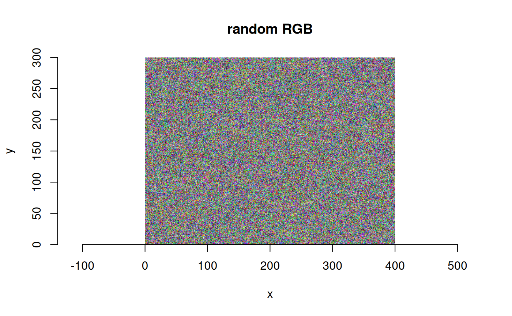

Create a GDAL in-memory dataset from R data without copying
Source:R/gdal_helpers.R
rvector_to_MEM.Rdrvector_to_MEM() creates a GDAL MEM dataset that references pixel data in
an existing R vector. It returns an object of class GDALRaster for a
writable in-memory dataset without copying the source data. The underlying
R object is protected from garbage collection until the returned dataset is
closed. GDAL MEM datasets support most kinds of auxiliary information
including metadata, coordinate systems, georeferencing, color interpretation,
nodata, color tables and all pixel data types (see Details).
Usage
rvector_to_MEM(
data,
xsize,
ysize,
nbands = 1L,
gt = NULL,
bbox = NULL,
srs = NULL
)
vector_to_MEM(
data,
xsize,
ysize,
nbands = 1L,
gt = NULL,
bbox = NULL,
srs = NULL
)Arguments
- data
An R vector of type
"double","integer","raw"or"complex", containing pixel values to be exposed as a GDAL in-memory raster. The pixels must be arranged in left-to-right, top-to-bottom order interleaved by band.length(data)must equalxsize * ysize * nbands.- xsize
Integer value giving the number of raster columns.
- ysize
Integer value giving the number of raster rows.
- nbands
Integer value giving the number of raster bands.
- gt
A numeric vector of length six containing the affine geotransform for the raster. Defaults to
c(0, 1, 0, 0, 0, 1)if neithergtnorbboxare given.- bbox
A numeric vector of length four containing the raster bounding box geospatial coordinates (
c(xmin, ymin, xmax, ymax)). Ignored ifgtis given.- srs
Optional character string containing the raster spatial reference coordinate system as a WKT string.
epsg_to_wkt()orsrs_to_wkt()can be used to convert from other formats to WKT if necessary.
Value
An object of class GDALRaster providing a GDAL MEM dataset with
write access pointing to the underlying C array for data. The R object
referenced by data is protected from garbage collection during the lifetime
of the returned dataset, i.e., until its $close() is called or the dataset
object itself is garbage collected. An error is raised if creation of the
MEM dataset fails.
Details
The returned dataset is open with write access. Methods of the GDALRaster
object can be called to modify dataset and band properties, e.g., to set
nodata values, metadata items, band descriptions, color tables, etc. The
original R vector will be modified in place if the object's $write()
method is used.
The MEM dataset will have a GDAL data type matching the type of the input vector:
| R vector type | GDAL raster type |
| double | Float64 |
| integer | Int32 |
| raw | UInt8 (Byte in GDAL < 3.13) |
| complex | CFloat64 |
vector_to_MEM() is an alias of rvector_to_MEM() for backward
compatibility. It is a deprecated name of the function that will be removed
in a future version. Please use rvector_to_MEM() instead.
Note
MEM datasets also support addBand() from existing R data without copying
(see Examples).
The $close() method should be called when the GDALRaster object is no
longer needed so that resources can be freed. MEM datasets cannot be
re-opened once the object's $close() method has been called.
vector_to_MEM() is a deprecated name for the function, currently set as
an alias of rvector_to_MEM(). The vector_to_MEM() alias will be removed
in a future version.
Examples
v <- sample(0:255, 20, replace = TRUE)
(ds_mem <- rvector_to_MEM(v, xsize = 5, ysize = 4))
#> C++ object of class <GDALRaster>
#> • Driver: In Memory Raster (MEM)
#> • DSN: <data pointer>
#> • Dimensions: 5, 4, 1
#> • CRS: not set
#> • Pixel resolution: 1.000000, 1.000000
#> • Bbox: 0.000000, 0.000000, 5.000000, 4.000000
all((ds_mem$read(1, 0, 0, 5, 4, 5, 4) == v))
#> [1] TRUE
ds_mem$write(1, 0, 0, 5, 4, (v * -1))
print(v)
#> [1] -46 -43 -196 -142 -124 -149 -196 -63 -111 -176 -53 -254 -202 -79 -141
#> [16] -148 -179 -64 -47 -151
ds_mem$close()
# MEM also supports no-copy addBand() from R data
xsize <- 400
ysize <- 300
r <- sample(0:255, xsize * ysize, replace = TRUE) |> as.raw()
ds_mem <- rvector_to_MEM(r, xsize, ysize)
ds_mem$setRasterColorInterp(1, "Red")
g <- sample(0:255, xsize * ysize, replace = TRUE) |> as.raw()
ds_mem$addBand("Byte", g)
#> [1] TRUE
ds_mem$setRasterColorInterp(2, "Green")
b <- sample(0:255, xsize * ysize, replace = TRUE) |> as.raw()
ds_mem$addBand("Byte", b)
#> [1] TRUE
ds_mem$setRasterColorInterp(3, "Blue")
ds_mem$info()
#> Driver: MEM/In Memory Raster
#> Files: none associated
#> Size is 400, 300
#> Origin = (0.000000000000000,0.000000000000000)
#> Pixel Size = (1.000000000000000,1.000000000000000)
#> Corner Coordinates:
#> Upper Left ( 0.0000000, 0.0000000)
#> Lower Left ( 0.000, 300.000)
#> Upper Right ( 400.000, 0.000)
#> Lower Right ( 400.000, 300.000)
#> Center ( 200.000, 150.000)
#> Band 1 Block=400x1 Type=Byte, ColorInterp=Red
#> Band 2 Block=400x1 Type=Byte, ColorInterp=Green
#> Band 3 Block=400x1 Type=Byte, ColorInterp=Blue
plot_raster(ds_mem, main = "random RGB")
#> ✖ failed to get projection ref

ds_mem$close()